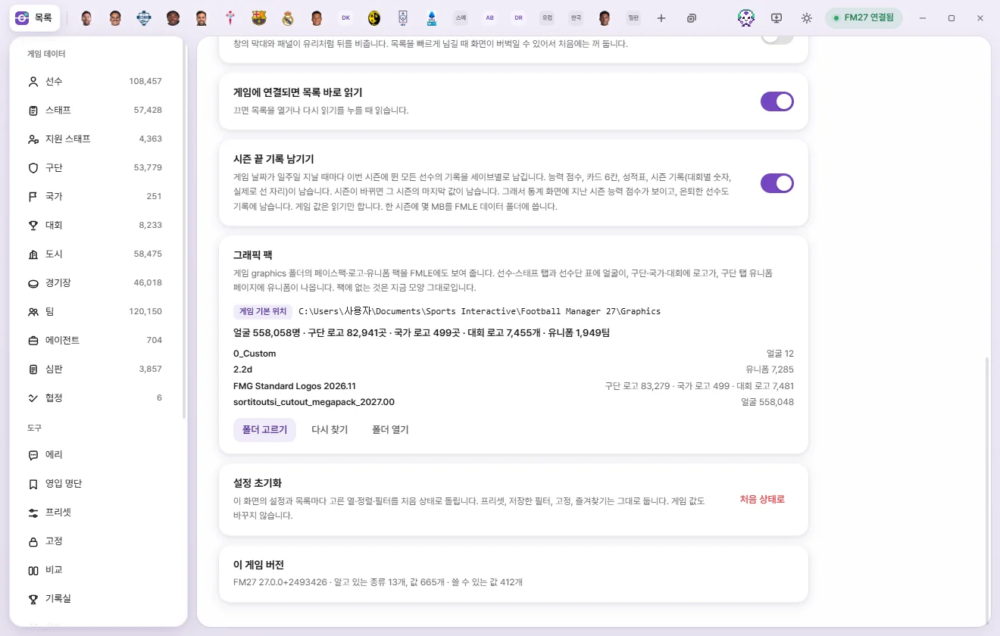

Tools
Graphics packs
Brings the facepacks, logo packs, and kit packs installed in your FM graphics folder right into FMAX. Check or switch folders in Settings.
What shows up in FMAX
FMAX reads the packs inside your game's graphics folder and displays their images throughout the app. Anything not covered by a pack keeps its default appearance. FMAX only ever reads this folder—it never modifies your packs.
| Graphic | Where it appears |
|---|---|
| Face | Headers on person tabs (players, staff, etc.), small portraits in lists and quick search, beside names in squad and staff tables on Club tabs, player cards, the Record room, and Club records |
| Club logos | Club tab headers and small badges beside club names in lists. Teams use their club's logo |
| Nation logos, Competition logos | Headers on their respective tabs and small badges in lists |
| Kits | 'Graphics pack kits' (home, away, third) on Club tab › Kits |

Checking your folder in Settings
Look under Graphics packs in Settings (under Tools on the left).


- Folder: Shows the path currently in use, labeled either 'Default game location' or 'Custom folder'. The default game location is
Documents\Sports Interactive\Football Manager 27\graphics. - Images found: Face count · Club logos count · Nation logos count · Competition logos count · Kits team count.
- Pack list: Lists how many images were found inside each pack folder.
| Button | What it does |
|---|---|
| Choose folder | Pick a different graphics folder and scan its packs |
| Use game default | Shown only when using a Custom folder; switches back to the Default game location |
| Rescan | Scans the current folder again from scratch |
| Open folder | Opens the folder in File Explorer |
How FMAX finds packs
FMAX matches graphics the exact same way FM does: by reading each pack's config.xml to see which image file maps to which person's face, logo, or kit. Because of that, any pack without a config.xml won't appear in FMAX either.
- If two packs include an image for the same person or club, the pack whose folder name comes first alphabetically takes priority.
- Whenever you add or remove a pack, FMAX notices the change to
config.xmland reloads automatically (checking at intervals of up to 20 seconds). Click Rescan if you want to refresh immediately. - Custom portraits exported to the game via 'Use in game' on a player card are saved inside an FMAX subfolder within your graphics folder and excluded from this pack list.
Troubleshooting
| Message on screen | What to do |
|---|---|
| This folder does not exist | Click Choose folder and select the graphics folder containing your packs |
| Could not find a config.xml mapping faces, logos, or kits in this folder | Make sure your packs are extracted properly inside the graphics folder and contain a config.xml file |
| Graphics folder is read from the game-connected FMAX window | View it from the main FMAX desktop app |
On player cards, FMAX uses a facepack portrait when one is available, and falls back to the Photo chosen in FMAX otherwise (Face photos).